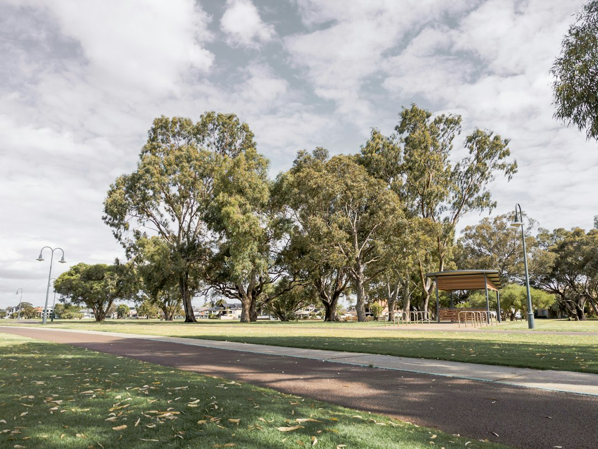

In Western Australia, the key number is 0.5 m of retained ground. Above that, the source guide says a building permit is generally required, with engineered walls designed to AS 4678 where needed. It also gives typical Perth comparison ranges of about $250-$600/m2 for limestone block and $450-$700/m2 for concrete post and panel, before excavation, drainage and engineering are added.
For homeowners comparing retaining wall builders perth options, the practical question is how the wall will handle height, slope, drainage, material choice and Western Australian approval rules.
Retaining Wall Builders Perth Explained
Retaining Walls Perth frames the job around Perth conditions first: coastal sand, inner sand belt sites, Darling Scarp slopes, wall height, boundary proximity and whether the wall is part of wider building work. That is a useful way to compare quotes, because a wall that looks simple from the street may still need drainage, engineering or permit attention once the retained ground and adjoining land are considered.
The material choice should follow the site brief. Limestone suits many Perth projects because the published guide identifies Tamala limestone and cream limestone block as locally common. Concrete post and panel can suit sites where slotted posts and precast panels are preferred. Besser block is positioned for taller engineered work and rendered boundary finishes. Timber sleepers are described for garden terraces and low boundary retaining, while rock and boulder walls are linked to sloped hills blocks.
Who This Applies To
This guide is for homeowners, owner builders and renovators who are comparing a new wall, a replacement wall or repair work before speaking with contractors. It is also relevant where a driveway, building pad, garden terrace or boundary level change depends on soil being held back rather than left as an exposed cut.
- Low garden edges: ask whether the wall is only landscaping or whether it retains ground in a way that triggers approval checks.
- Boundary work: confirm whether the wall affects a dividing fence, boundary wall or adjoining land before work starts.
- Sloped blocks: ask how the contractor will deal with batter, drainage, access for excavation and the finished ground level.
- Failed walls: document leaning, bulging, cracking, gaps, seepage and soil movement before asking for repair advice.
Material Choices Perth Quotes Often Compare
Perth retaining quotes often separate into limestone block, concrete post and panel, besser block, timber sleeper and rock or boulder construction. The useful comparison is not which material is universally best, but which one matches the height, finish, drainage path, access constraints and approval status of the site.
For a broader primer on local wall choices, the companion guide on retaining walls in Perth is a useful reference point. When speaking with a builder, ask whether a quoted system is structural retaining, a landscape edge, or an engineered wall that requires formal sign-off. Also ask whether concrete panels, retaining wall posts, gravel, ag-drain and geofabric are included in the written scope, not added later as loose extras.
Drainage And Winter Performance Questions
The source page is unusually direct about drainage: ag-drain, gravel and geofabric behind every wall type are treated as structural details, not optional extras. That point matters in Perth because the same guide highlights wet winters after dry summers as the moment when poorly drained walls can show failure.
Before accepting a quote, ask where water will go, how subsoil drainage will be installed, and whether the wall face is expected to show seepage after rain. If a wall is replacing a failed structure, ask the contractor to explain whether the previous problem was height, loading, drainage, footing movement or material deterioration. A repair price without a cause can leave the same conditions in place.
Permits, Engineering And Quote Scope
The WA threshold in the supplied guide is specific: a building permit exemption applies only when a retaining wall retains no more than 0.5 m of ground and is not tied to other building work, adjoining land protection, a boundary wall or a dividing fence issue. Above that point, the guide says a permit is generally required, and engineered work may need design to AS 4678.
A useful written quote should therefore name the wall length and retained height, the material system, drainage inclusions, excavation allowances, engineering status and who is responsible for local government approval checks. For homeowners comparing contractors, the clearest quote is not always the shortest. It is the one that makes exclusions visible before machinery, materials and approvals start costing real money.
- Measure The Retained Height. Record the maximum height of ground being held back, because the WA guide identifies 0.5 m as the key permit threshold.
- Describe The Site Conditions. Note slope, sand, hills conditions, boundary proximity, driveway or building work, and signs of water movement.
- Choose A Material Shortlist. Compare limestone, post and panel, besser block, timber sleeper or boulder work against the site rather than appearance alone.
- Ask For Drainage Detail. Request written confirmation of ag-drain, gravel and geofabric where they are part of the wall system.
- Check Approval Responsibility. Ask who confirms local government requirements, engineering and permit documentation before construction starts.
| Option | Where it can fit | Quote questions to ask |
|---|---|---|
| Limestone block | Local finish often associated with Perth's Tamala limestone and cream block walls | Is the price per square metre of wall face, and are excavation, drainage and engineering separate? |
| Concrete post and panel | Galvanised steel posts with slotted concrete panels, also described as precast or twin-side systems | Are posts, panels, gravel, ag-drain and geofabric all included in the written scope? |
| Besser block | Core-filled, steel-reinforced block walls for taller engineered retaining or rendered boundary finishes | Does the quote include engineering, footing detail and permit handling where required? |
| Timber sleeper | Garden terraces and low boundary retaining where the guide lists H4-treated pine and hardwood sleepers | What sleeper type is quoted, and is the wall height below any approval trigger? |
| Rock and boulder | Sloped Perth Hills style sites where a battered, free-draining natural stone finish is suitable | How is batter, drainage and access for machinery being allowed for? |
Common questions
Do retaining walls over 500 mm need a permit in Perth? The supplied guide says walls retaining more than 0.5 m of ground generally need a building permit in Western Australia. It also says the exemption depends on the wall not being tied to other building work, adjoining land protection, a boundary wall or a dividing fence issue.
How are Perth retaining wall prices usually compared? The source guide says Perth quotes are commonly compared per square metre of wall face. It gives rough guide ranges of $250-$600/m2 for limestone block and $450-$700/m2 for concrete post and panel, before excavation, drainage and engineering.
Which wall type should I ask a builder about first? Start with retained height, soil, slope, boundary conditions and drainage. Limestone, concrete post and panel, besser block, timber sleeper and boulder walls are all listed options, but the suitable choice depends on the site and approval requirements.
What are warning signs that an existing wall may be failing? The guide lists visible lean or bulge, horizontal cracking, gaps at the base, water pooling or seeping through the face after rain, and soil settling or slumping above the wall as signs to raise with a contractor.
This guide covers Perth retaining wall planning, material comparison, drainage questions, pricing signals and WA permit checks.